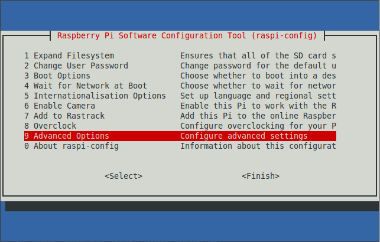
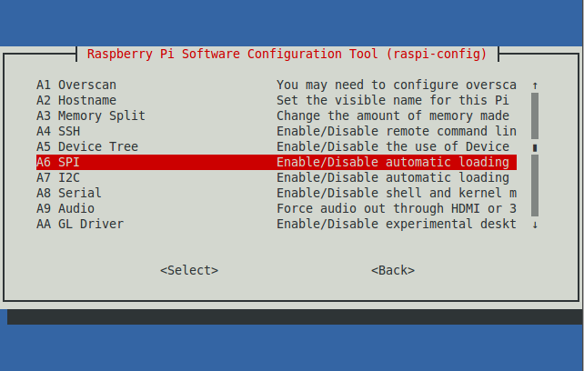

About
Piduino Library (libpiduino) is a C++ library that lets you write and compile Arduino programs for the Raspberry Pi. This library targets the BCM283x SoC, all 54 pins, and not a specific set of pins of any Raspberry Pi (RPi) board.
This library does not support Analog to Digital Conversion (ADC) functions as the BCM283x SoC does not have an integrated ADC and we don’t want to create hardware-dependant software. If you need ADC is recomended to use external libraries.
Finally most of this library code was built so it can be easily exported to other plataforms like the Artik/Exynos SoCs or Snapdragon SoCs in the future, if you want to export this library to other plataforms send me an email.
Install
Open a terminal in your Raspberry Pi board and enter:
sudo apt-get install TODO
Setup
To run this library correctly first setup the SPI, I2C and Serial Interfaces. To do this type:
sudo raspi-config
Go to Advanced options.

Enable SPI and I2C Interfaces and disable Serial login shell.

- Enable SPI Interface: YES -> OK -> YES -> OK
- Enable I2C Interface: YES -> OK -> YES -> OK
- Dsiable Serial login shell: NO -> OK
Reboot your system.
Finally run this command to check that the SPI, I2C and Serial drivers are there. Note that the I2C number may be diferent depending on your board version.
ls /dev/ | grep 'i2c-\|spidev\|ttyAMA0'
The outupt should be something like this:
i2c-1
spidev0.0
spidev0.1
ttyAMA0
Run
Once the setup is complete create a file, lets say test.cpp, and copy the following code:
test.cpp
#include <Arduino.h>
int ledPin = 4; // GPIO4
void setup() {
pinMode(ledPin, OUTPUT);
}
void loop() {
printf("LED ON\n");
digitalWrite(ledPin, HIGH);
delay(1000);
printf("LED OFF\n");
digitalWrite(ledPin, LOW);
delay(1000);
}Compile it.
g++ -lpiduino test.cpp -o test
Now connect an LED with its proper resistor (e.g. 330 ohms) to RPi GPIO 4. See which pin is GPIO 4 in your board in the RPi Pinout tab.
Don’t forget to ground your circuit with your RPi board !!
Run your program.
./test
Enjoy.
See the Reference to see all the functions ported.
Optional
If you want to compile an .ino file you can do it like below and use either g++ or gcc.
g++ -lpiduino -x c++ test.ino -o test
If you want to include main() in your code you can call “piDuino.h”. piDuino.h has already all the headers of the Piduino library included so you don’t need to type Wire.h or SPI.h like as if you use Arduino.h.
#include "piDuino.h"
int ledPin = 4; // GPIO4
void setup() {
pinMode(ledPin, OUTPUT);
}
void loop() {
printf("LED ON\n");
digitalWrite(ledPin, HIGH);
delay(1000);
printf("LED OFF\n");
digitalWrite(ledPin, LOW);
delay(1000);
}
int main () {
setup();
while(1){
loop();
}
return (0);
}Thank you!.
By Jorge Garza , Updated on: